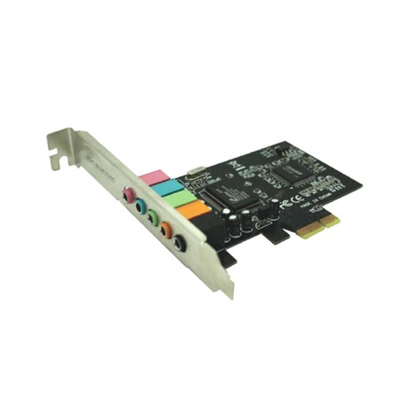

Tarjetas de sonido
¡Infórmate!
Introducción
La tarjeta de sonido es una tarjeta de expansión. Esta tarjeta tiene como función aumentar las capacidades del ordenador al que se instala .En este caso esta tarjeta sirve para la entrada y salida de audio entre el ordenador y el exterior por medio de puertos de audio.
La tarjeta de audio se inserta dentro de las ranuras de expansión o “Slots” integradas en la placa base y se atornilla al gabinete para evitar movimientos. Todas las tarjetas de sonido integran varios puertos para conectar los dispositivos externos tales como altavoces, micrófonos, teclados musicales, etc.
Funcionamiento de la tarjeta de sonido
La mayoría de las tarjetas de sonido usan un DAC (convertidor de digital a analógico) para convertir las señales de audio digital a analógicas. La señal se emite a los auriculares y otros dispositivos acústicos. Las tarjetas más avanzadas pueden incluir más de un chip de sonido para soportar altas velocidades de datos y realizar múltiples funciones simultáneamente
La mayoría de las tarjetas de sonido tienen puertos para conectar altavoces, micrófonos y dispositivos de asistencia. Pero también hay tarjetas con una gran cantidad de puertos de entrada y salida diseñados para tareas más avanzadas.Los más comunes son:
- Rosa:entrada de audio de micrófono
- Azul claro:entrada de audio
- Verde claro:salida de audio lineal para la señal estéreo principal (altavoces frontales o auriculares)
- Naranja:salida de línea de audio para el canal central o subwoofer
- Negro:una salida de audio lineal para sonido envolvente, por regla general, estos son altavoces traseros

Instalación de una tarjeta de sonido
Las tarjetas de sonido se incluyen para la comodidad del usuario en la mayoría de los PC, ya sea en la ranura de expansión PCI, integradas en la placa base o conectadas a través de puertos externos.
Como regla general, una tarjeta de sonido , en el caso del audio integrado, viene con un software patentado en el disco o se puede descargar desde el sitio web del fabricante. Los sistemas operativos modernos pueden detectar y descargar fácilmente drivers para tarjetas de sonido populares.Dicho software puede permitir al usuario realizar ajustes más finos y proporcionar herramientas para grabar, editar, etc.

Tipos de tarjeta de sonido
Los tipos de tarjetas de sonido presentan un mismo fin de exteriorizar un audio, sin embargo, se puede presentar distintos procesos de funcionamiento según las características que estas presentan, entre los tipos de tarjetas de sonido se encuentran:
La tarjeta de sonido externa permite llevar a cabo conexiones de fuentes externas que requieren de sonido como micrófonos, instrumentos musicales, reproductores de audio, señales MIDI, etc.. .Dando la posibilidad de exteriorizar un audio.Se presenta una particularidad para este tipo, ya que se presentan como tarjeta de sonido usb, por lo tanto su proceso de funcionamiento es muy sencillo, con tan solo llevar a cabo tal tipo de conexión se podrá comenzar a hacer uso de ella.

Este tipo de tarjetas de sonido son las más empleadas, ya que generalmente los dispositivos que se usan diariamente cuentan con ellas, entre el funcionamiento que lleva a cabo permite la introducción de sonido de tal manera que pueda ser digitalizado y ser reproducido en los periféricos del ordenador en el cual se encuentra instalada de manera interna.Un detalle importante es que las tarjetas de sonido interna no solo funcionan para la proporción de sonido, también se encargan de su distribución, su procesamiento, así como es capaz de llevar a cabo la mezcla de varios sonidos.

Precios de tarjetas de sonido

Asus Strix Raid DLX
precio:238.35€

Unotec Tarjeta de sonido
precio:5.25€

Creative Sound Blaster Z SE
precio:89.10€

Creative Sound BlasterX AE-5 Plus
precio:137.14€
Mejores marcas actuales de tarjetas de sonido
ASUSTeK Computer, Inc. Conocida simplemente como ASUS , es una corporación multinacional de hardware, electrónica y robótica con sede en Taipéi, Taiwán, en el Distrito de Beitou. Sus productos incluyen la producción de tarjetas madre (placas base), tarjetas gráficas, dispositivos ópticos, productos multimedia, periféricos, computadoras portátiles, netbooks, de sobremesa, servidores, estaciones de trabajo, tablets, teléfonos móviles, equipos de red, monitores, proyectores, y soluciones de refrigeración para computadoras. La compañía también es un fabricante OEM que produce componentes para otras compañías.
Creative Technology Limited fábrica productos multimedia de computadora tiene su sede en Singapur, donde la firma fue fundada por Sim Wong Hoo (nacido en 1955) el 1 de julio de 1981. Tiene más de 5.000 empleados en todo el mundo. Sim sigue actuando como CEO de la compañía. La subsidiaria en Estados Unidos de la compañía es conocida como Creative Labs, Inc.
Actualmente, sus productos más lucrativos son probablemente los reproductores de audio digital Creative NOMAD/Creative Zen, que compiten con el iPod y otros reproductores.
Opinión personal
Personalmente la tarjeta de sonido me parece un dispositivo muy interesante a la par que útil debido a que, gracias a este, la configuración de entrada y de salida de audio tiene un amplio abanico de posibilidades, la cual puede ser muy util para los usuario que disponen de este dispositivo.